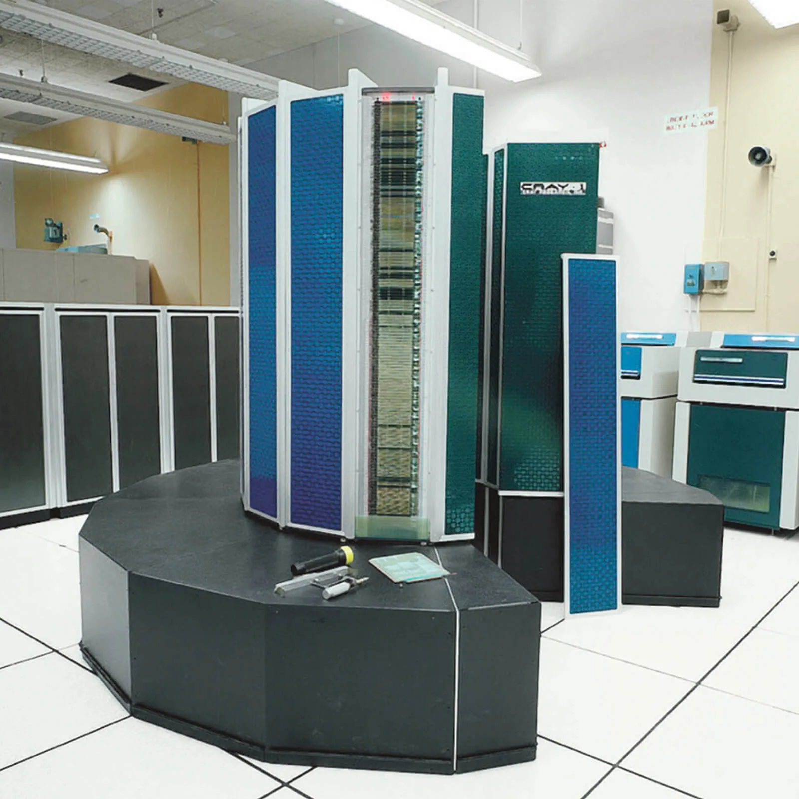

From Cray-1 to Frontier: A working engineer’s history of supercomputer architecture#
Introduction#
{kind=link}

Fig. 1 The Cray-1 at Los Alamos, 1976.#
In June 1976 a refrigerator-sized arc of beige metal and brown vinyl arrived at Los Alamos National Laboratory. It weighed five tons, drank 115 kilowatts, was cooled by liquid Freon piped through its frame, and could perform 160 million floating-point operations per second. It cost $8.8 million in 1976 dollars. It was called the Cray-1, and for most people in the field it was the moment the word supercomputer stopped being a vague honorific and became the name of a specific kind of machine.
A 2024 MacBook Air M3, fanless and battery-powered, sustains roughly 200 billion floating-point operations per second on its CPU alone — over twelve hundred Cray-1s. A single NVIDIA H100 SXM GPU performs about two hundred thousand Cray-1s at FP64, or more than four hundred thousand if you count its FP64 Tensor Core peak. Frontier, the first machine to clear the exaflop barrier (June 2022, Oak Ridge National Laboratory), performs roughly seven billion Cray-1s in parallel.
But raw arithmetic isn’t the interesting part. The interesting part is that those seven billion Cray-1-equivalents are not arranged like a Cray-1. The Cray-1 was a single thinking machine — one program, one address space, one absurdly fast scalar-and-vector pipeline. Frontier is a tightly-coupled datacenter: 9,408 nodes, each with a 64-core CPU and four GPUs, lashed together with a custom HPE Slingshot-11 network, presented as a single logical machine but only when your code is written to think that way.
That difference — between one fast machine and one fast collection of machines — is the story of this course. It is not a clean monotonic progression. It is a forty-year fight between three architectural philosophies:
Make one CPU as fast as you possibly can. (Cray-1, X-MP, Cray-2, ETA-10, Cray-3.)
Connect a huge number of small CPUs. (Connection Machine, Intel Paragon, Cray T3E, BlueGene, Beowulf.)
Connect a moderate number of CPUs to specialized accelerators that are themselves doing #1 internally. (Roadrunner, Titan, Summit, Frontier, Aurora, El Capitan.)
Vector processing — the thing the Cray-1 made famous — won, then lost, then won again in disguise. Today every laptop CPU has SIMD vector units (AVX, NEON, SVE), every GPU is essentially a wide vector machine with branch-divergence handling, and the workloads that drive the Top500 are matrix multiplies — which is to say, exactly the workload Cray designed for in 1972. But the hardware running those workloads is not what Cray would have built. Understanding why is the whole point.
The central thesis of this course, stated once: vector thinking migrates from era to era; it never disappears. It moves from Cray-1 vector registers (1976) into vectorizing Fortran compilers (1978) into shared-memory vector multiprocessors (1982) into massively-parallel SIMD machines (1985) into multimedia SIMD instructions on commodity CPUs (1996) into GPU SIMT (2006) into AVX-512 and ARM SVE (2010s) and finally into the wide vector lanes of every exascale node. The abstractions over vector hardware change — vector registers, vector intrinsics, SIMT threads, predicated vector-length-agnostic loops, standard-library parallel algorithms — but the underlying engineering bet stays the same: amortize instruction control over many elements, and engineer the memory subsystem hard enough to keep those elements arriving. Everything else in this course is a variation on that one bet.
Getting the code, doing the labs#
This course lives in two places:
This website is the read-only home: 15 chapters plus the capstone, an appendix on modern HPC versus AI training clusters, an assessment and project guide, and an annotated bibliography. No signup, no paywall. Cite it, link to it, fork it.
The GitHub repository at github.com/duane1024/sc-course is the working home: the Markdown source for every chapter (so you can suggest changes), the runnable lab exercises, and the canonical SAXPY-across-six-eras code gallery.
If you’re just reading the course, the website is enough. Each chapter is self-contained. If you want to do the labs, clone the repo:
git clone https://github.com/duane1024/sc-course
cd sc-course
The repository layout:
sc-course/
├── weeks/ Chapter source (the prose you're reading on the website)
├── labs/ Runnable lab exercises, one per chapter that has hands-on work
├── code/ SAXPY across six eras — scalar Fortran through modern C++ stdpar
├── references.md Annotated primary-source reading list
├── assessment.md Self-assessment rubric, project portfolio, HPC allocation pointers
└── appendix-hpc-vs-ai-cluster.md Modern supercomputer vs. frontier-LLM training cluster
Each lab folder has its own README.md with build and run instructions. The labs come in three flavors:
Python scripts (Labs 1, 5, 6, 7, 8):
python3 scoreboard.pyand read the output.Compiled C / Fortran / MPI / CUDA (Labs 3, 4, 9, 13, 16, and the
code/gallery): each folder has aMakefileor a one-line build command.Docker-based mini-cluster (Labs 10 and 15):
docker compose up -d, thensbatchinto a containerized Slurm cluster. The architecture is identical to a real HPC site, just smaller.
You will need: a Unix-like environment (Linux, macOS, or WSL on Windows), a C/C++ compiler (gcc or clang), gfortran, Python 3 with NumPy, MPICH or OpenMPI for the MPI labs, and Docker for the cluster labs. For the CUDA lab you’ll want an NVIDIA GPU; if you don’t have one, a Google Colab account with the free T4 runtime works for everything in the course. The assessment.md page also lists free educational allocations on real HPC systems (NSF ACCESS, OLCF DD, ALCF DD, LUMI) for projects that need cluster scale.
The content is licensed CC BY 4.0; the code is MIT. Issues and pull requests are welcome on GitHub — corrections, additions, translations, classroom adaptations.
How this course is structured#
Fifteen weeks. Each week is a chapter. Each chapter has:
Where we are in 2026 — the bottom-line takeaway, in plain language, before any history.
What the machine was — architecture, clock, memory, interconnect, peak FLOPS, what made it distinctive.
What the code looked like — the actual programming model. We show real code: CAL listings, Fortran with vendor directives,
C*, MPI, CUDA, and modern C++ parallel algorithms.Why it won. Why it lost. — what real-world workload validated this architecture, and what undercut it.
Lab — a runnable exercise on your laptop. Often we use modern stand-ins for vanished hardware.
Discussion questions — for self-study or a classroom.
Further reading — primary sources where possible. Trip reports, retrospectives, machine manuals.
The labs assume a Linux or macOS laptop with a C/C++ compiler, Python, NumPy, and (for later weeks) MPICH and either an NVIDIA GPU or a Google Colab account. Setup instructions are in each lab folder.
A note on getting it right#
Computer history is contentious. Different people will tell you the first supercomputer was the IBM 7030 Stretch (1961), or the CDC 6600 (1964), or the Cray-1 (1976). Different people will tell you the Connection Machine was a brilliant dead end or a generation-ahead vision that lost to commodity inertia. Different people will tell you the Earth Simulator’s 2002 #1 finish was a wake-up call or a pyrrhic victory. Where these debates exist, the course presents the strongest version of each argument and then tells you which one I think the evidence favors. You’re a working engineer; you can decide.
What you should be able to do at the end#
Explain why a Cray-1 was fast, in terms a 1976 engineer would recognize and a 2026 engineer can use.
Read CAL, vector Fortran,
C*, MPI, CUDA, and modern parallel C++, and explain what each one is hiding from you.Look at any machine on the Top500 and decode its architecture — node count, accelerator type, interconnect topology — from the spec sheet alone.
Take a kernel — say, SAXPY or a 5-point stencil — and re-implement it in the idiom of any of the six eras we cover.
Form a defensible opinion about whether modern “supercomputers” are the descendants of the Cray-1, or something else entirely with the same name.
Acknowledgments#
This course was created by Duane Moore, with substantial drafting and editorial assistance from Anthropic’s Claude and OpenAI’s ChatGPT. The argument, factual review, and structural decisions are mine; the AI tools contributed prose drafting, citation aggregation, and consistency checking. Errors that remain are mine.
Let’s start in 1964, with a quiet engineer in Chippewa Falls, Wisconsin, who was about to embarrass IBM.